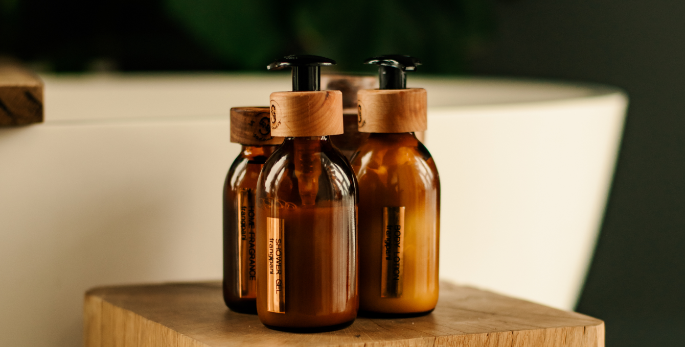
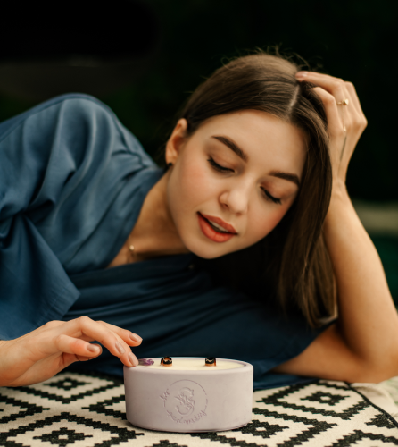

<div id="blocks">
  <div class="container">
    <div class="block-one">
      <div class="block-one__img">
        
      </div>
      <div class="block-one__content">
        <div class="block-one__content__wrap">
          <h2>
            By Sadovskiy — це преміальний бренд на 100% натуральної косметики.
          </h2>
          <p>
            Виключний рівень якості, дотримання стандартів виробництва, найкращі
            у світі, сертифіковані олії та інгредієнти.
          </p>
        </div>
      </div>
    </div>
    <div class="block-two">
      <div class="block-two__content">
        <div class="block-two__content__wrap">
          <h2>Виробництво</h2>
          <p>
            Рецептури складені професійним хіміком — кожен продукт доведений до,
            не боїмося цього слова, ідеалу.</p>
            <p>Всі складові закупаємо закордоном і маємо сертифікати якості на них.</p>
            <p>Створення продуктів відбувається в окремому цеху з професійним
            обладнанням. Можна бути певними — ви отримуєте продукт високої
            якості.</p>
          </p>
        </div>
      </div>
      <div class="block-two__img">
        
      </div>
    </div>
    <div class="block-third">
      
      <h3 class="block-third__title">
        Якими цінностями ми керуємося, створюючи наші продукти?
      </h3>
      <div class="block-third__lists">
        <ul class="block-third__list">
          <li class="block-third__item">
            <b>натуральність</b> — з самого старту ми відмовилися від фарбників,
            парабенів, сульфатів та інших хімічних домішок
          </li>
          <li class="block-third__item">
            <b>aesthetic</b> — прагнемо, аби кожна жінка відчула свою цінність,
            отож, створили продукт, що буде не лише якісним, але й естетичним.
            Його хочеться фотографувати, розглядати, торкатися…
          </li>
        </ul>
        <ul class="block-third__list">
          <li class="block-third__item">
            <b>еко</b> — паперовий «одяг» для мила та бомбочок, дерев’яні кришки
            та скляні пляшечки, які ми з радістю наповнюємо продуктами повторно,
            даючи тарі «друге життя»
          </li>
          <li class="block-third__item">
            <b>найякісніші компоненти</b> — їх ми замовляємо закордоном або
            створюємо власноруч
          </li>
        </ul>
      </div>
    </div>
    <div class="block-fourth">
      <ul class="images">
        <li class="images__item">
          
        </li>
        <li class="images__item">
          
        </li>
      </ul>
      <h3>Чому обирають нашу майстерню?</h3>
      <ul class="texts">
        <li class="texts__item">
          Якщо ми говоримо, що наші продукти «на 100% натуральні», то саме так і
          є. Без сультфатів, без парабенів, без фарбників та ароматизаторів.
          Склад кожного продукту створений природою і ми завжди готові надати
          вам детальний перелік інгредієнтів для кожного.
        </li>
        <li class="texts__item">
          Унікальний дизайн. Ми не копіюємо і вважаємо це своєю особливістю —
          робити продукти такими, якими їх відчуває наше серце. Сухоцвіти у
          олійці для кутикули, пелюстки квітів у солях… Саме через ці, здавалося
          б, дрібнички ми кажемо вам, як сильно любимо.
        </li>
        <li class="texts__item">
          Подарункове пакування = ідеальний подарунок собі або іншим. Ми не
          стали робити «подарункове пакування за окрему плату». Хочемо, аби
          кожна жінка відчувала свою цінність та розуміла — вона варта того, аби
          отримати своє замовлення у подарунковому пакуванні та з особливою
          насолодою приділити собі час.
          <b>Бо ж це так важливо — відчувати себе особливою.</b>
        </li>
      </ul>
    </div>
  </div>
</div>
